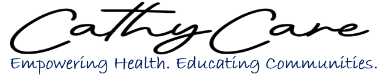

Dr. Catherine “Cathy” Nankanja, DNP at Charter Health, is a passionate nursing professional dedicated to advancing community health through compassionate care and preventive medicine. With over a decade of experience, she combines clinical expertise with a strong commitment to patient education and wellness.
Born in Uganda and raised across diverse cultures, Cathy brings a unique global perspective to her work. Now a U.S. citizen, she is driven by a mission to empower individuals and communities to take control of their health through knowledge, early intervention, and accessible care.
Cathy continues to make a meaningful impact by promoting healthier lifestyles, mentoring future nurses, and serving communities with dedication and excellence.
Doctor of Nursing Practice passionate about community health, patient education, and empowering future nurses.